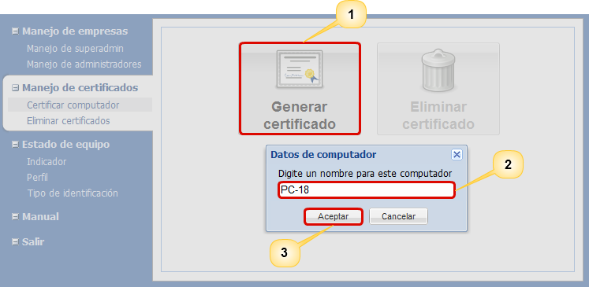
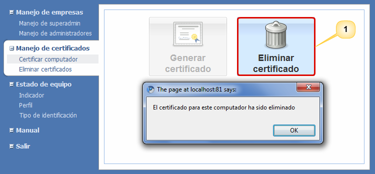

Generar certificado
Para generar un certificado, el usuario debe pulsar el botón
Generar certificado
(1). El sistema desplegará una ventana en donde se debe
ingresar el nombre del computador (2). Una vez ingresado
dicho nombre, debe pulstar el botón Aceptar
(3). Luego
el sistema le mostrará un breve mensaje en el que le informará
del éxito de la certificación. En la Figura 2 se muestra
la pantalla para llevar a cabo el proceso de certificación de un
computador.
Nota: El nombre con el
que se certifica cada computador debe ser único.

Figura 2. Pantalla para la generación de certificados.
Eliminar certificado
Para
eliminar el certificado generado en un computador, pulse el
botón Eliminar certificado (1) y el sistema desplegará un
mensaje donde le informará sobre el éxito de la eliminación del
certificado.
Nota: Recuerde que si
elimina el certificado de un computador que está asignado a
algún equipo, los analistas no podrán acceder al sistema por lo
que será necesario llevar a cabo el proceso de certificación de
un computador nuevamente.

Figura 3. Pantalla para la eliminación de certificados.